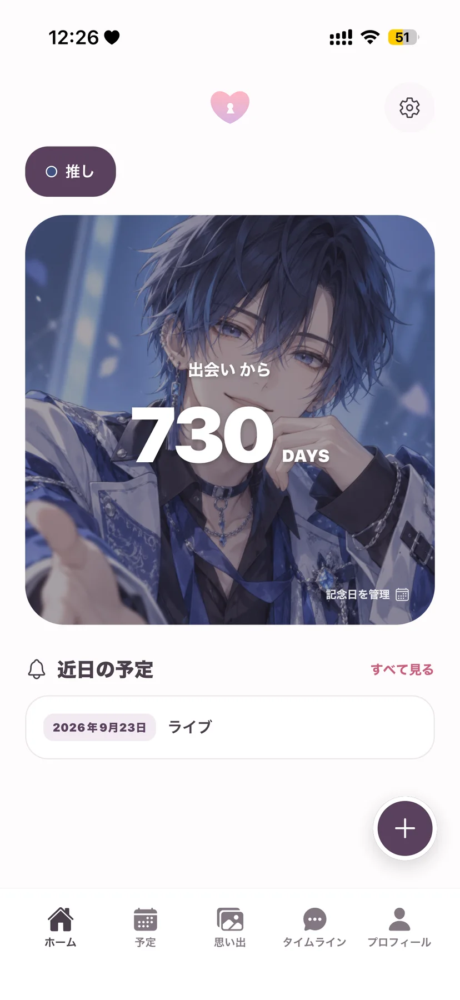
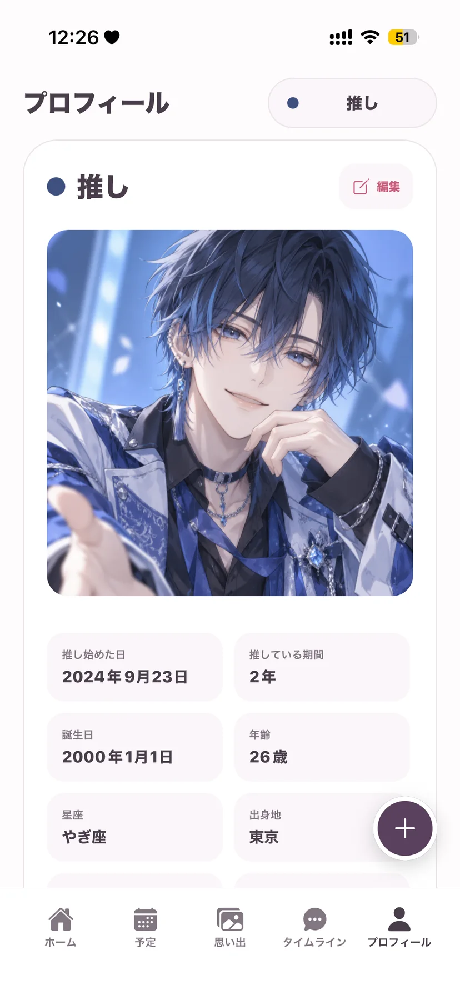

写真・日記・記念日相片、日記、紀念日Photos, diaries, anniversaries
App Store
アカウント登録不要 · 記録は端末内に毋須註冊帳戶 · 記錄儲存在裝置內No account needed · Your records stay on your device
 OshiLove
OshiLove
予定、記念日、日記、写真をひとつに集中整理日程、紀念日、日記與相片Plans, anniversaries, diary entries and photos in one place

 Oshi Pocket
Oshi Pocket
ライブや特典会の予定と費用をまとめて記録集中記錄演出、特典會及相關費用Track live events, meet-and-greets and their costs
両アプリとも iOS 15.1 以降に対応しています。端末ごとの互換性と配信地域は各 App Store ページでご確認ください兩款 App 均支援 iOS 15.1 或以上，個別裝置相容性及供應地區請查看對應 App Store 頁面Both apps require iOS 15.1 or later; check each App Store listing for device compatibility and regional availability
どちらのアプリも、アカウント登録なしで始められます兩款 App 均毋須註冊帳戶即可開始使用Neither app requires an account to get started
はい。どちらのアプリも複数の推しを登録し、推しごとに記録を整理できます可以，兩款 App 均可加入多位推し，並按推し整理記錄Yes. Both apps support multiple oshis and organise records by oshi
両アプリとも無料でダウンロードできます。追加の購入や Premium の内容・価格は、各アプリの購入画面で確認してからお選びください兩款 App 均可免費下載，額外購買及 Premium 功能與價格請先查看各 App 內的購買畫面Both apps are free to download; review optional purchases, Premium features and current prices in each app before buying